`~Welcome!~`
Hello, and welcome to my website! I built this from scratch using skills I'm actively learning in HTML, CSS and Javascript in my Website Development class. If you have any suggestions or advicce, please visit my "contact me" page and drop me a line. I appreciate the help!
These are a few of my favourite things...
thrift shopping | shiba inus | karaoke | captain america | live concerts
iced coffee | cats | vocaloid songs | kpop | captain america | bernese mountain dogs
Here are some of my favourite pictures of my cat, Inji! *:･ﾟ✧(ꈍᴗꈍ)✧･ﾟ:*
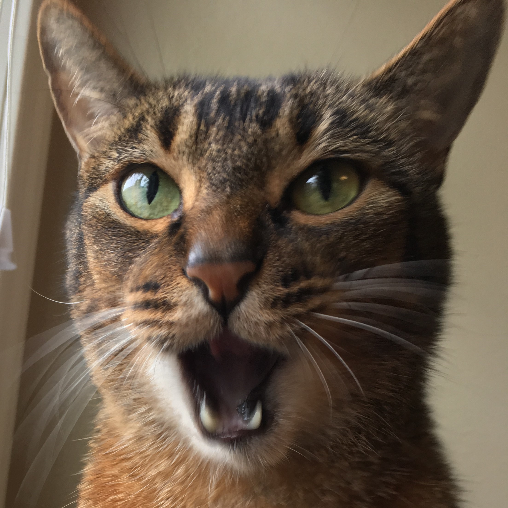 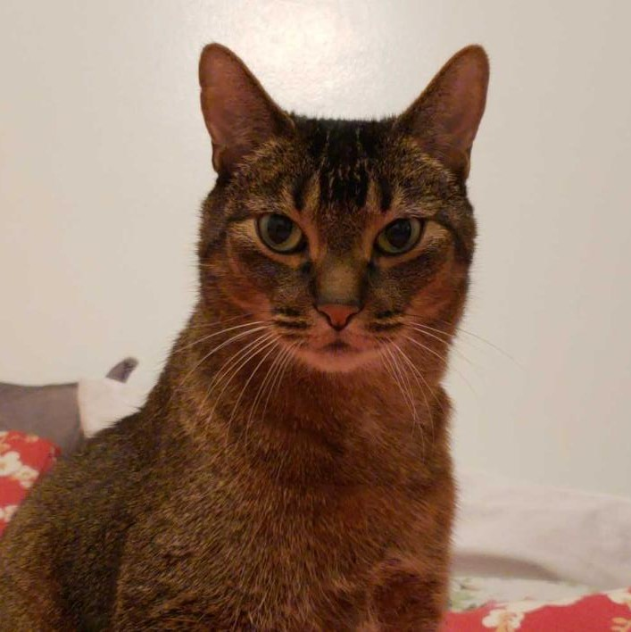 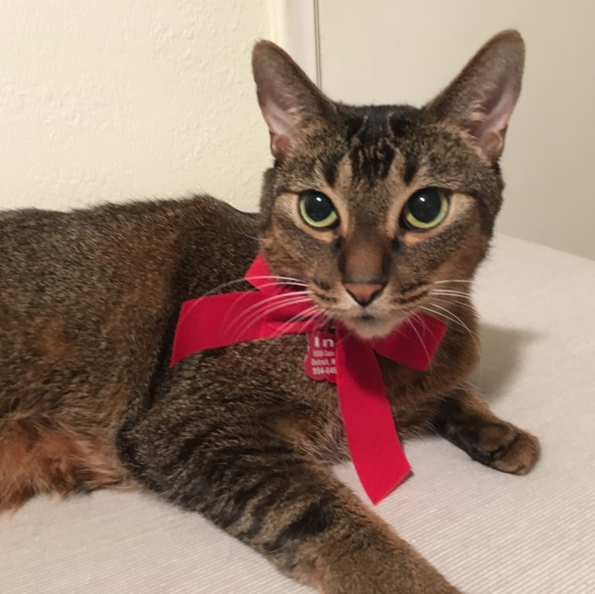 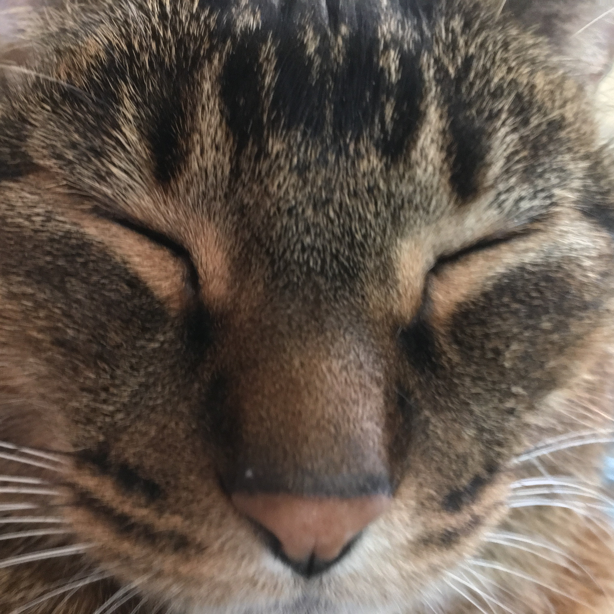
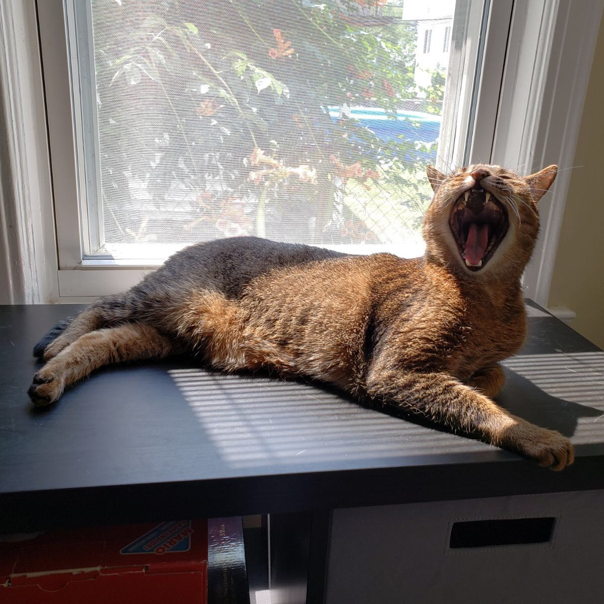
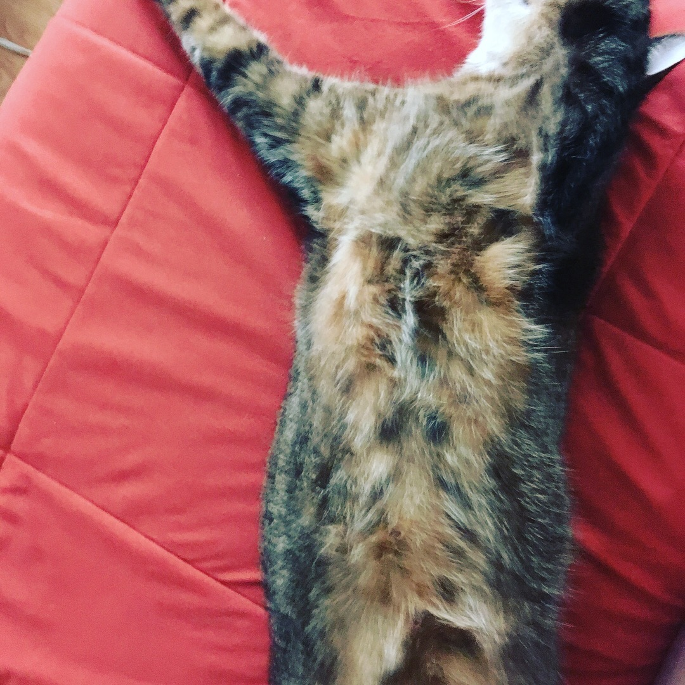
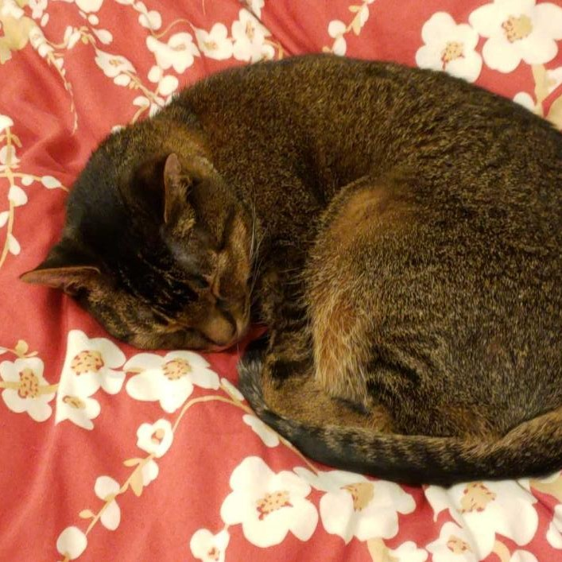
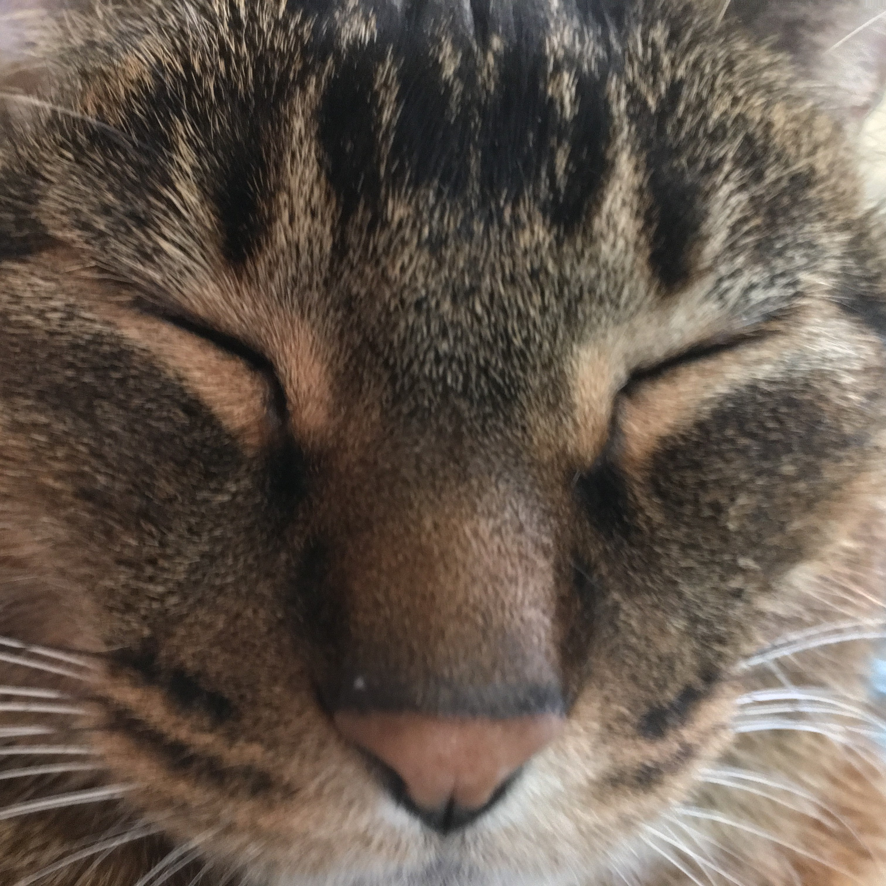
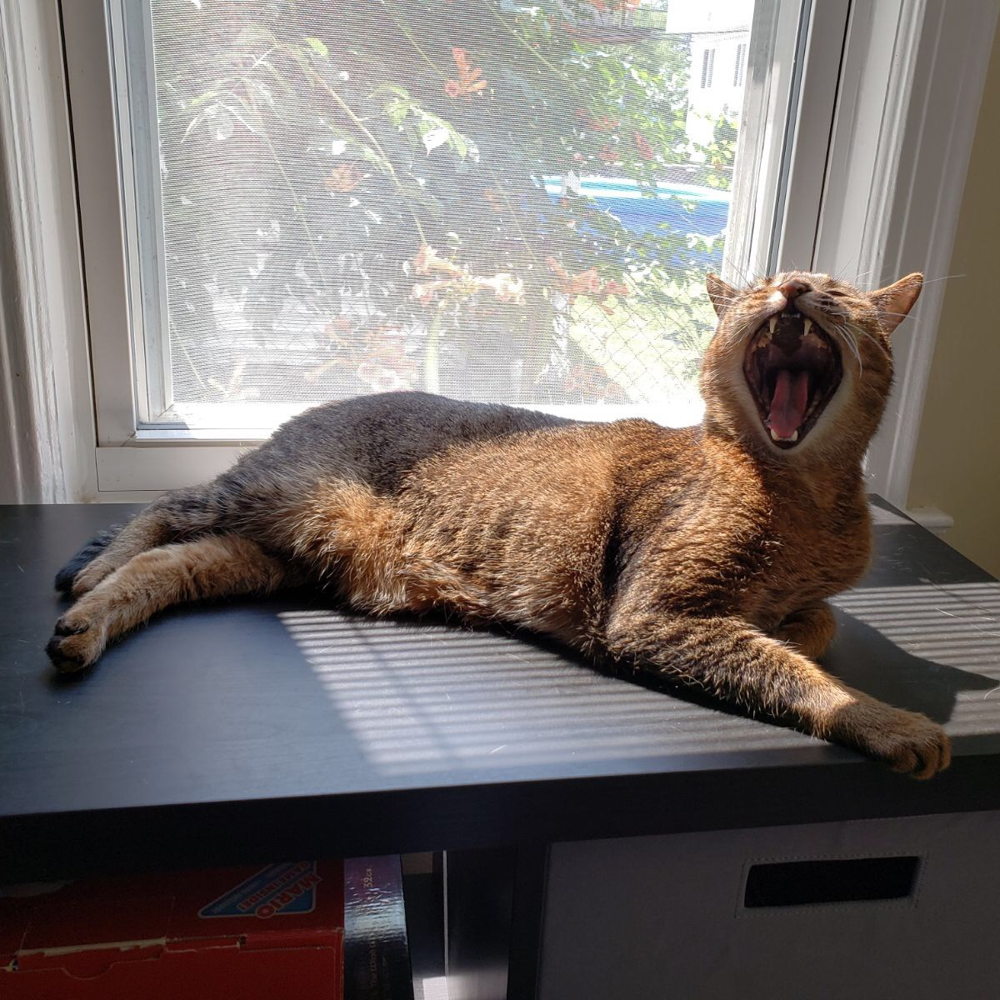
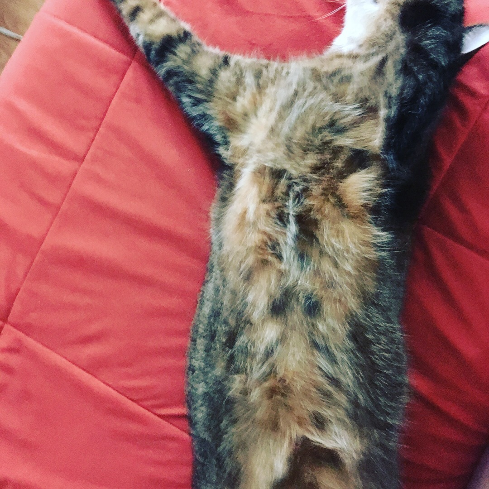
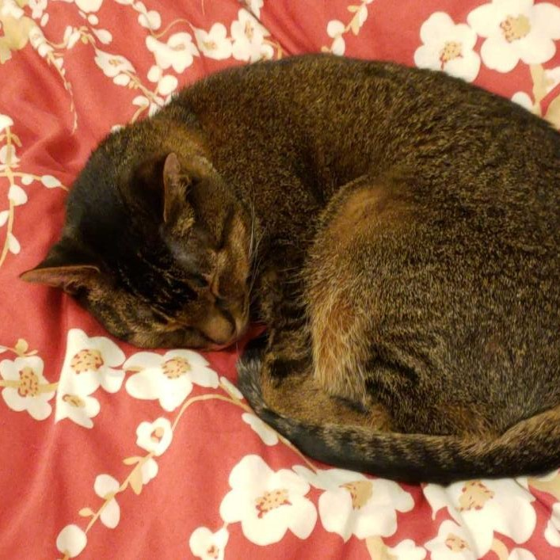
(He is half Abyssinian and half Tabby. He is sweet, affectionate, and demanding when he wants a snack.)